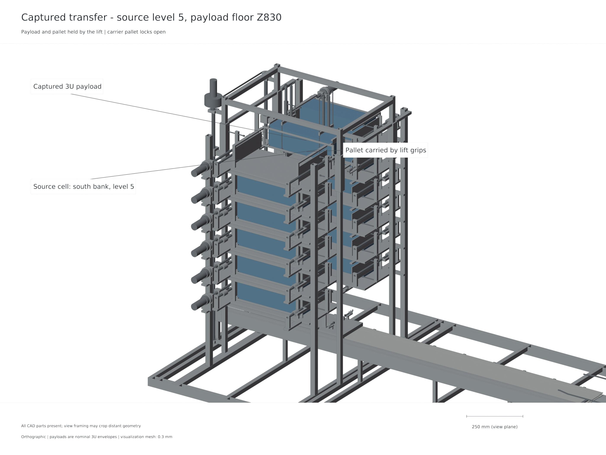
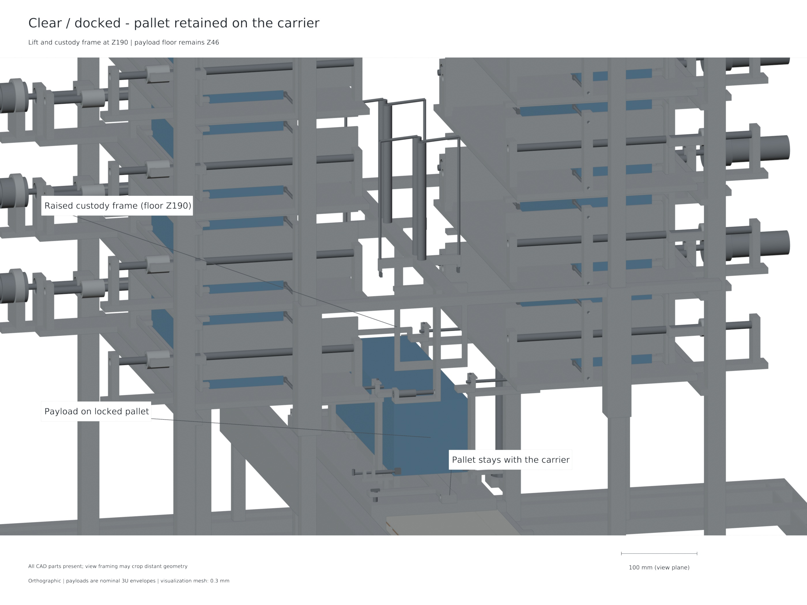

Guided feed
Each cell has a guided lead-screw drive and independent restraint. Feeding occurs during host coast.
Inspect evidenceThe twelve-payload architecture combines fixed storage banks, guided lateral pushers, a central indexed lift and a reusable electromagnetic carrier.
Twelve 4 kg 3U envelopes in two six-level banks. Restrain the inventory; select one cell.
A guided lead screw pushes laterally into the indexed lift. Positive custody transfers the payload and captive pallet.
The lift lowers to the carrier. Prove the pallet locks and withdraw the custody frame before enabling launch.
Command a modeled 1–3 m/s shot. The payload departs; the pallet stays on the carrier through arrest and return.


Each cell has a guided lead-screw drive and independent restraint. Feeding occurs during host coast.
Inspect evidenceLift grips and carrier bayonets overlap custody at the handoff. Prove the lock before releasing the other restraint.
Inspect evidenceThe payload alone departs. The captive pallet remains attached during brake arrest and carrier return.
Inspect evidenceThe integrated twelve-3U ACR1 architecture has editable CAD/STEP, nominal motion and custody checks, finite motor and coupled shot models, and a same-input host-assisted mission comparison.
Instrumented hardware correlation, environment testing and payload/host qualification remain future work. Gen6 mixed-size studies have their own configuration and evidence.